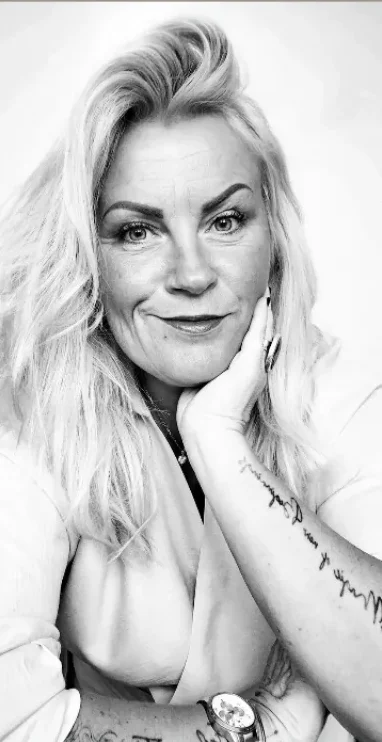

Konsultācijas 1:1
Sistēmiskās konsultācijas 1:1 klātienē prakses telpās Latgales ielā 322, Rīgā, vai tiešsaistē.
Sistēmiskie sakārtojumi · Rīga
Sistēmiskie ģimenes sakārtojumi, konsultācijas 1:1 un grupas. Klātienē Rīgā vai tiešsaistē.
Tēmas
Klīniskā un veselības psihologa pieredze, strādājot ar psihotraumu.
Starppaaudžu stāsti sieviešu un vīriešu līnijā, kas ietekmē libido, auglību un spēju saņemt.
Libido un dzīvības plūsmas bloķējumi. Seksualitāte atgriežas kā resurss, nevis spriedze vai kontrole.
Auglības, neauglības, potences un paternitātes tēmas. Darbs ar psihogēno neauglību.
Par Tavām attiecībām ar naudu un to, kas bremzē.
Tas, kas ķermenī ticis apspiests, mantots vai aizliegts. Noslēpumi, kas dzīvo ķermenī, nevis prātā.
Simptoms nav kļūda, bet lojalitātes žests.
Pakalpojumi
Sistēmiskās konsultācijas 1:1 klātienē prakses telpās Latgales ielā 322, Rīgā, vai tiešsaistē.
Grupas notiek Aston Hotel Rīga, pašā Rīgas sirdī. Pauzēs baudi terasi, sauli, vēju, debesis, ziedus, skatu.
Manis radīti tematiskie sakārtojumi, kur kombinējas vecmātes un dūlas pieredze, klīniskā un veselības psihologa darbs ar psihotraumu un sistēmisko sakārtojumu prakse. Šis nav darbs ar „problēmu”. Tas ir darbs ar dzīvības atjaunošanu sistēmā.
Psiholoģiskā transformāciju spēle par Tavām attiecībām ar naudu un to, kas bremzē.
TRIPOD testi, kas veidoti, balstoties uz mūsdienu organizāciju psiholoģijas atziņām un empīriskiem pētījumiem. Visi testi ir standartizēti un validēti Latvijā.
Topošajiem kolēģiem, sistēmisko sakārtojumu praktiķiem, lasu lekcijas un vadu nodarbības. Semināri pedagogiem un komandām.
Šeit var norādīt cenas un tuvāko grupu datumus.
Par mani
Esmu sertificēta klīniskā un veselības psiholoģe un pārraudze. 25 gadu prakses pieredze: medicīnā, psihiatrijā, dažādās ekspertīžu komisijās un psiholoģiskajās izpētēs. Stacionārajās tiesu ekspertīzēs, veselības un darbaspēju ekspertīzēs, pedagoģiski medicīniskajās, militārajās.
Berta Hellingera sistēmfenomenoloģijas metodes apguve kļuva dzīvi mainoša: ģimenes sistēmiskie sakārtojumi, sistēmiskais koučings un organizāciju sistēmiskie risinājumi. To izmantoju, individuāli konsultējot 1:1 savā privātpraksē. Vadu arī sistēmisko sakārtojumu grupas un tematiskās grupas par seksualitāti un naudu.
Manā pieredzē ir arī vecmātes studijas, dūlas pieredze, grūtnieču un dzemdību atbalstīšana un darbs ar psihogēno neauglību.

Atsauksmes
Šeit var ielikt dalībnieku atsauksmes no Instagram izceltajiem stāstiem.
Pieteikšanās
Jaunais 1:1 pieraksts no 2026. gada septembra.
Šeit būs pieteikšanās poga: saite uz ziņu Instagram, WhatsApp vai pieteikuma formu.
Izvēlies dizainu
Krāsas
Fonti
Izvēle saglabājas šajā ierīcē. Gatavajā lapā šīs pogas nebūs.